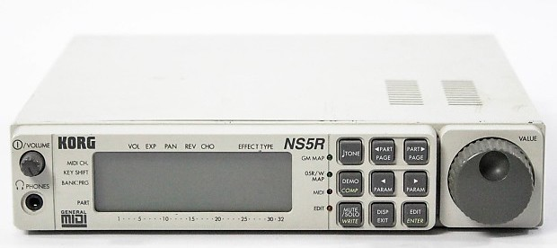
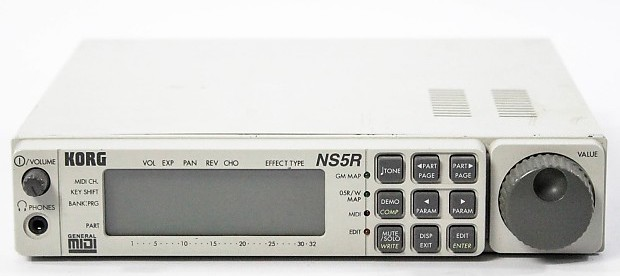

About Me
Hello! Thanks for coming to my page. I currently reside in Renton Washington and am a freelance location sound mixer in the film industry. Think of location sound as capturing the sound that is happening while something is being filmed. I show up to the location where the filming is taking place, and record the relevant sounds of what's happening on-camera. Most of the time that's dialogue, but some of the time that's Here is a link to my film work. The landing photo is from the first feature film I worked on called Prospect. It features the two main characters as they prepare to mine for a prescious alien mineral on a toxic moon.
Currently I'm attending a program at Epicodus to learn how to be a developer. These two fields are very similar in many ways!
List of projects I have created
- My First Webpage
- My Favorite Places
- My Favorite Things
My very first webpage created at Epicodus. It includes basic markup language and html.
Here's another page I created during week 1 listing my favorite places. This also uses html, however here I practiced including images.
This webpage lists some of my favorite things. I created this webpage using basic html, specifically to practice ordered and unordered lists.
My Professional Background
I studied music composition with an emphasis in audio technology. Throughout college I ran front of house sound for Fremont Abbey Arts. This lead me to a job at my university as the studio archivist. In this role I was in charge of recording, editing, mixing, and (_most importantly_) accurately archiving any music related performance at the University.
Deploying appropriate recording setups, organizing large amounts of data, and volunteering to help my professors out with their pet projects eventually lead me to a job in the tech field! My first "real" job out of college was at a company called VoiceBox Tecnhologies. However, it was here that I dipped my toes into the world of technology and coding.
At VoiceBox Technologies, I was part of the audio engineering team. We were responsible for capturing hundres of thousands of recordings with specific regional accents across many many different languages and in many many different environments. We would take these recordings and recreate certain environments (i.e. a car that's parked, a car that's on the freeway, a car with it's windows down, in a large kitchen, in a small kitchen, in a living room, etc.) Then we would measure for accuracy by comparing analysis between the simulated and real environments. Once we could re-create the environments within a certain percent of accuracy, we could apply this to the hundreds of thousands of recordings that we already had, saving the company lots and lots of sweet sweet cash, time, and energy.
At the time I was working here, I didn't realize it, but I was actually learning a lot about technology, coding, and the soft skills of what it takes to become a programmer.
However, after the one of the company's main clients floundered, they laid massive amounts of employees off (including me) eventually selling to their competitor. I was young, hurt, and skeptical to go get another job at a company after that. So I decided I would try freelance location sound recording.
Current interests
- Non Violent Communication
- Hot Yoga
- Synthesizer and midi configurations
Non Violent Communication is a book written by Marshall Rosenberg. Rosenberg was first and foremost a clinical psychologist. However he created this model for mediation and conflict resolution.
Hot yoga helps me survive the cold, isolating, dark gloom of the pnw.
Here is a simple midi problem and solution. The Korg NS5R (right) cannot be played without an external keyboard controller, the Korg Prologue (left). The Prologue must send the midi signal via midi output, to the NS5R midi input.
Problem: Even though you can hook up the Prologue to the NS5R and start playing, you won't be able to use the arppegiator. The NS5R is is from the 90s and doesn't receive the arpegiator data from the Prologue. Solution: route Prologue midi data to a computer, route that midi to return to the Prologue "midi out" port then connect a midi cable from the Prologue's "midi out" port to the NS5R's "midi input" port. Capture audio from both their analogue outputs.
Imagine adding several more synths and drum machines with midi- it gets hairy fast! With these sorts of complex routing options, it's helpful to draw a picture so you don't get lost. Click on their images below to learn more about them:
 

My Photos
here are some of my favorite photos I've taken